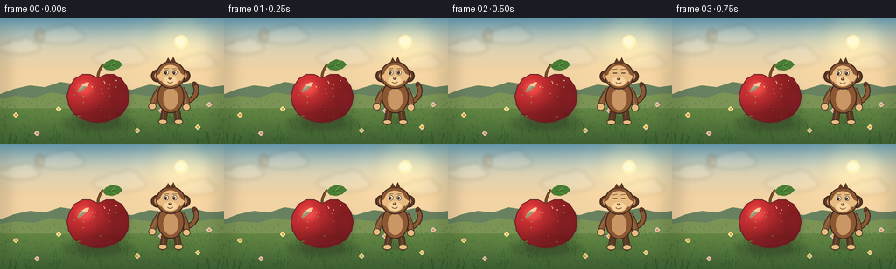
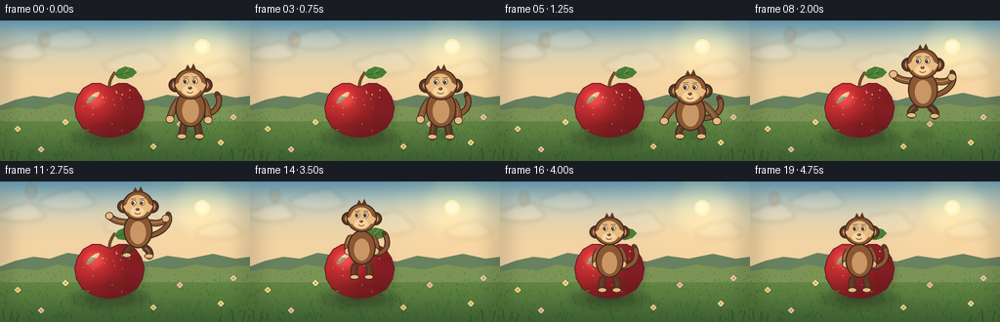
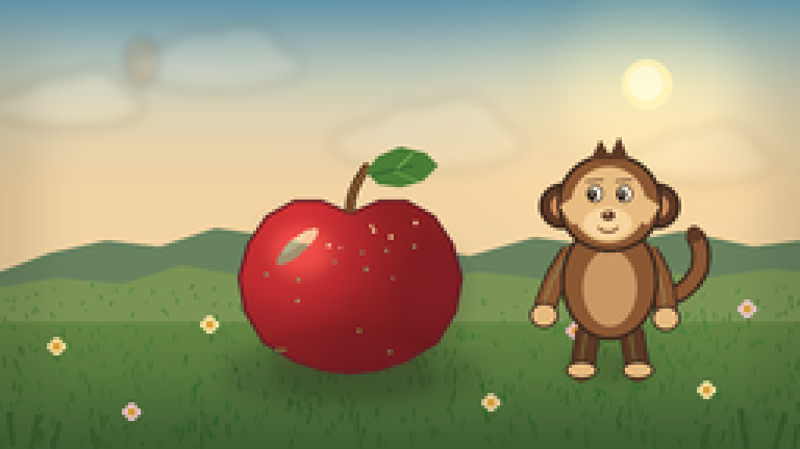
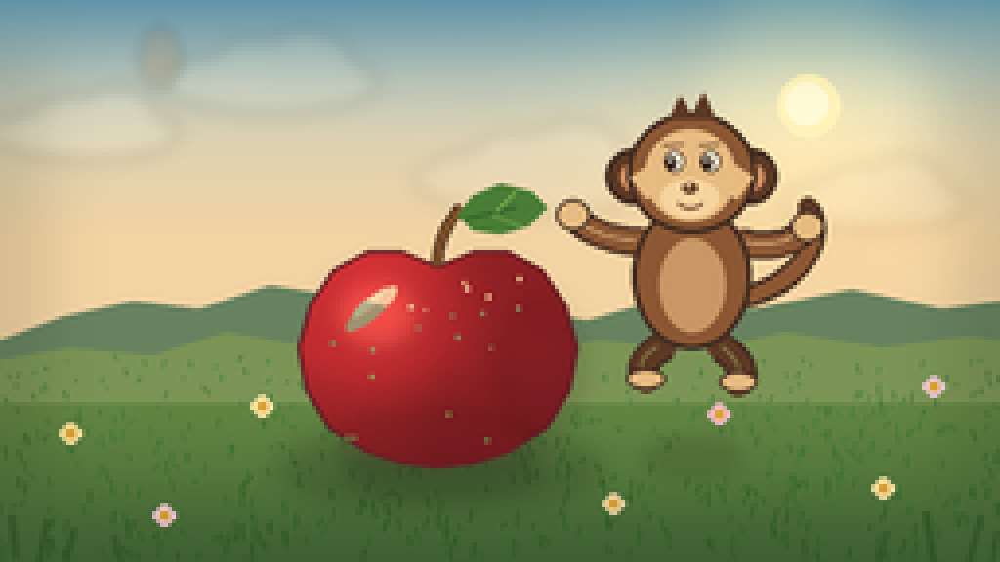
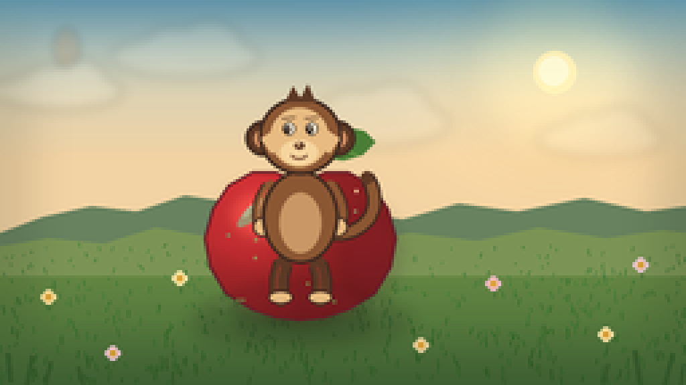

CODING AGENTS AS PIXEL WORLD MODELS
traex/DeepSeek-V4.1-Flash · dynamic_spatial_relationship_0058
点击播放 · 原生 RGB 像素
逐轮保存的候选
回放视频、检查图与代码变化。
每份候选均可单独播放。实际图片检查记录在下方工具轨迹中。
候选 01播放与检查图
点击播放 · 原生 RGB 像素


展开代码变化
--- 上一保存版本
+++ 本次保存版本
@@ -0,0 +1,583 @@
+from __future__ import annotations
+
+import math
+from pathlib import Path
+
+import imageio.v2 as imageio
+import numpy as np
+from PIL import Image, ImageDraw, ImageFilter
+
+import artifact_io
+
+
+WIDTH = 256
+HEIGHT = 144
+FRAMES = 20
+FPS = 4.0
+SS = 4
+WS = WIDTH * SS
+HS = HEIGHT * SS
+
+
+def sc(value: float) -> int:
+ return int(round(value * SS))
+
+
+def point(x: float, y: float) -> tuple[int, int]:
+ return sc(x), sc(y)
+
+
+def box(x0: float, y0: float, x1: float, y1: float) -> tuple[int, int, int, int]:
+ return sc(x0), sc(y0), sc(x1), sc(y1)
+
+
+def rgba(color: tuple[int, int, int], alpha: int = 255) -> tuple[int, int, int, int]:
+ return color[0], color[1], color[2], alpha
+
+
+def smoothstep(value: float) -> float:
+ value = max(0.0, min(1.0, value))
+ return value * value * (3.0 - 2.0 * value)
+
+
+def lerp(a: float, b: float, t: float) -> float:
+ return a + (b - a) * t
+
+
+def bezier(control: list[tuple[float, float]], count: int = 28) -> list[tuple[float, float]]:
+ result = []
+ for i in range(count):
+ t = i / (count - 1)
+ pts = control[:]
+ while len(pts) > 1:
+ pts = [
+ (lerp(pts[j][0], pts[j + 1][0], t), lerp(pts[j][1], pts[j + 1][1], t))
+ for j in range(len(pts) - 1)
+ ]
+ result.append(pts[0])
+ return result
+
+
+def rotated_ellipse(
+ cx: float,
+ cy: float,
+ rx: float,
+ ry: float,
+ angle: float,
+ count: int = 40,
+) -> list[tuple[float, float]]:
+ ca, sa = math.cos(angle), math.sin(angle)
+ points = []
+ for i in range(count):
+ t = 2.0 * math.pi * i / count
+ x, y = rx * math.cos(t), ry * math.sin(t)
+ points.append((cx + x * ca - y * sa, cy + x * sa + y * ca))
+ return points
+
+
+def draw_soft_ellipse(
+ image: Image.Image,
+ bounds: tuple[float, float, float, float],
+ color: tuple[int, int, int],
+ alpha: int,
+ blur: float,
+) -> None:
+ layer = Image.new("RGBA", image.size, (0, 0, 0, 0))
+ ImageDraw.Draw(layer).ellipse(box(*bounds), fill=rgba(color, alpha))
+ layer = layer.filter(ImageFilter.GaussianBlur(sc(blur)))
+ image.alpha_composite(layer)
+
+
+def draw_soft_polygon(
+ image: Image.Image,
+ points: list[tuple[float, float]],
+ color: tuple[int, int, int],
+ alpha: int,
+ blur: float,
+) -> None:
+ layer = Image.new("RGBA", image.size, (0, 0, 0, 0))
+ ImageDraw.Draw(layer).polygon([point(x, y) for x, y in points], fill=rgba(color, alpha))
+ layer = layer.filter(ImageFilter.GaussianBlur(sc(blur)))
+ image.alpha_composite(layer)
+
+
+def make_background() -> Image.Image:
+ yy, xx = np.mgrid[0:HS, 0:WS].astype(np.float32)
+ y = yy / SS
+ x = xx / SS
+
+ top = np.array([107, 164, 190], dtype=np.float32)
+ middle = np.array([191, 209, 201], dtype=np.float32)
+ horizon = np.array([242, 211, 163], dtype=np.float32)
+ ground_near = np.array([112, 145, 72], dtype=np.float32)
+ ground_far = np.array([67, 103, 53], dtype=np.float32)
+
+ sky_t = np.clip(y / 88.0, 0.0, 1.0)
+ lower_mix = np.clip(sky_t / 0.68, 0.0, 1.0)[..., None]
+ upper_mix = np.clip(sky_t / 0.42, 0.0, 1.0)[..., None]
+ sky = top * (1.0 - upper_mix) + middle * upper_mix
+ sky = sky * (1.0 - lower_mix) + horizon * lower_mix
+
+ ground_t = np.clip((y - 88.0) / 56.0, 0.0, 1.0)[..., None]
+ ground = ground_near * (1.0 - ground_t) + ground_far * ground_t
+ rgb = np.where((y < 88.0)[..., None], sky, ground)
+
+ sun_glow = np.exp(-(((x - 207.0) / 45.0) ** 2 + ((y - 27.0) / 35.0) ** 2))
+ rgb += sun_glow[..., None] * np.array([32, 24, 8], dtype=np.float32)
+ rgb = np.clip(rgb, 0, 255).astype(np.uint8)
+ image = Image.fromarray(rgb, "RGB").convert("RGBA")
+
+ glow = Image.new("RGBA", image.size, (0, 0, 0, 0))
+ gd = ImageDraw.Draw(glow)
+ for radius, alpha in ((35, 22), (25, 30), (15, 45)):
+ gd.ellipse(box(207 - radius, 27 - radius, 207 + radius, 27 + radius), fill=rgba((255, 239, 170), alpha))
+ glow = glow.filter(ImageFilter.GaussianBlur(sc(7)))
+ image.alpha_composite(glow)
+ draw = ImageDraw.Draw(image)
+ draw.ellipse(box(199, 19, 215, 35), fill=rgba((255, 243, 185)))
+ draw.ellipse(box(201, 21, 212, 32), fill=rgba((255, 250, 214)))
+
+ cloud_layer = Image.new("RGBA", image.size, (0, 0, 0, 0))
+ cd = ImageDraw.Draw(cloud_layer)
+ clouds = [
+ (22, 34, 24, 7, 46),
+ (69, 21, 28, 8, 38),
+ (137, 46, 31, 9, 34),
+ (224, 52, 24, 7, 32),
+ ]
+ for cx, cy, rx, ry, alpha in clouds:
+ cd.ellipse(box(cx - rx, cy - ry, cx + rx, cy + ry), fill=rgba((248, 246, 226), alpha))
+ cd.ellipse(box(cx - rx * 0.55, cy - ry * 1.4, cx + rx * 0.2, cy + ry * 0.65), fill=rgba((253, 250, 235), alpha))
+ cd.ellipse(box(cx - rx * 0.1, cy - ry * 1.7, cx + rx * 0.75, cy + ry * 0.5), fill=rgba((249, 246, 228), alpha))
+ cloud_layer = cloud_layer.filter(ImageFilter.GaussianBlur(sc(2.2)))
+ image.alpha_composite(cloud_layer)
+
+ draw = ImageDraw.Draw(image)
+ far_hill = [
+ (0, 87), (16, 81), (34, 77), (51, 79), (69, 73), (89, 76),
+ (109, 81), (129, 78), (150, 82), (171, 76), (193, 79),
+ (218, 74), (241, 79), (256, 77), (256, 96), (0, 96),
+ ]
+ draw.polygon([point(*p) for p in far_hill], fill=rgba((104, 130, 95)))
+
+ near_hill = [
+ (0, 92), (18, 89), (39, 91), (58, 85), (81, 89), (106, 86),
+ (129, 91), (153, 87), (178, 90), (201, 85), (226, 89),
+ (247, 86), (256, 87), (256, 103), (0, 103),
+ ]
+ draw.polygon([point(*p) for p in near_hill], fill=rgba((123, 148, 85)))
+
+ rng = np.random.default_rng(2408)
+ for _ in range(540):
+ gx = float(rng.uniform(0, WIDTH))
+ gy = float(rng.uniform(92, HEIGHT))
+ depth = (gy - 92.0) / 52.0
+ length = rng.uniform(1.0, 3.2) * (0.55 + depth)
+ lean = rng.uniform(-1.0, 1.0)
+ shade = int(54 + 28 * (1.0 - depth) + rng.uniform(-9, 9))
+ color = (max(42, shade - 12), min(150, shade + 45), max(31, shade - 21))
+ draw.line(
+ [point(gx, gy), point(gx + lean, gy - length)],
+ fill=rgba(color, 115),
+ width=max(1, sc(0.42)),
+ )
+
+ flower_positions = [
+ (18, 111, (248, 224, 154)),
+ (42, 132, (244, 203, 213)),
+ (67, 104, (249, 231, 167)),
+ (157, 129, (239, 215, 163)),
+ (184, 106, (241, 187, 200)),
+ (226, 125, (249, 229, 164)),
+ (239, 99, (240, 205, 213)),
+ ]
+ for fx, fy, petal in flower_positions:
+ stem_color = rgba((57, 98, 49))
+ draw.line([point(fx, fy), point(fx + 0.6, fy + 5)], fill=stem_color, width=sc(0.55))
+ for dx, dy in ((-1.5, 0), (1.5, 0), (0, -1.5), (0, 1.5)):
+ draw.ellipse(box(fx + dx - 1.4, fy + dy - 1.2, fx + dx + 1.4, fy + dy + 1.2), fill=rgba(petal))
+ draw.ellipse(box(fx - 1.2, fy - 1.2, fx + 1.2, fy + 1.2), fill=rgba((221, 165, 63)))
+
+ vignette = Image.new("RGBA", image.size, (0, 0, 0, 0))
+ vd = ImageDraw.Draw(vignette)
+ vd.rectangle(box(0, 0, WIDTH, HEIGHT), outline=rgba((36, 48, 33), 38), width=sc(10))
+ vignette = vignette.filter(ImageFilter.GaussianBlur(sc(8)))
+ image.alpha_composite(vignette)
+ return image
+
+
+APPLE_CENTER = (112.0, 91.0)
+APPLE_POINTS = [
+ (112, 68), (103, 64), (94, 64), (85, 69), (79, 78), (76, 89),
+ (78, 100), (84, 110), (94, 116), (103, 119), (112, 120),
+ (121, 119), (130, 116), (140, 110), (146, 100), (148, 89),
+ (145, 78), (139, 69), (130, 64), (121, 64),
+]
+
+
+def make_apple() -> Image.Image:
+ layer = Image.new("RGBA", (WS, HS), (0, 0, 0, 0))
+ mask_image = Image.new("L", (WS, HS), 0)
+ ImageDraw.Draw(mask_image).polygon([point(x, y) for x, y in APPLE_POINTS], fill=255)
+ mask = np.asarray(mask_image) > 0
+
+ yy, xx = np.mgrid[0:HS, 0:WS].astype(np.float32)
+ x = xx / SS
+ y = yy / SS
+ cx, cy = APPLE_CENTER
+ u = (x - cx) / 35.0
+ v = (y - cy) / 29.0
+ light = (
+ 0.67
+ + 0.45 * np.exp(-(((u + 0.42) / 0.55) ** 2 + ((v + 0.45) / 0.7) ** 2))
+ + 0.13 * np.clip(-u, 0, 1)
+ - 0.12 * np.clip(v, 0, 1)
+ )
+ base = np.array([204, 47, 51], dtype=np.float32)
+ shade = np.clip(base[None, None, :] * light[..., None], 0, 255).astype(np.uint8)
+ alpha = np.where(mask, 255, 0).astype(np.uint8)
+ pixels = np.dstack([shade, alpha])
+ shaded = Image.fromarray(pixels, "RGBA")
+ layer.alpha_composite(shaded)
+
+ draw = ImageDraw.Draw(layer)
+ draw.polygon([point(x, y) for x, y in APPLE_POINTS], outline=rgba((104, 31, 39)), width=sc(1.1))
+ draw_soft_ellipse(layer, (84, 70, 109, 91), (255, 130, 102), 72, 3.3)
+ draw_soft_ellipse(layer, (128, 77, 149, 111), (101, 24, 42), 45, 3.0)
+ draw_soft_ellipse(layer, (86, 106, 137, 121), (115, 28, 42), 38, 2.2)
+ highlight = rotated_ellipse(95, 79, 8.5, 2.4, -0.72)
+ draw.polygon([point(x, y) for x, y in highlight], fill=rgba((255, 173, 139), 95))
+ highlight_core = rotated_ellipse(94, 78, 4.8, 1.25, -0.72)
+ draw.polygon([point(x, y) for x, y in highlight_core], fill=rgba((255, 219, 183), 125))
+
+ rng = np.random.default_rng(812)
+ for _ in range(22):
+ sx = rng.uniform(84, 141)
+ sy = rng.uniform(71, 115)
+ if mask[sc(sy), sc(sx)]:
+ radius = rng.uniform(0.32, 0.65)
+ draw.ellipse(box(sx - radius, sy - radius, sx + radius, sy + radius), fill=rgba((255, 190, 117), 50))
+
+ stem_pts = bezier([(112, 68), (112, 62), (115, 56), (118, 53)], 20)
+ draw.line([point(x, y) for x, y in stem_pts], fill=rgba((80, 51, 30)), width=sc(3.0), joint="curve")
+ draw.line([point(x, y) for x, y in stem_pts], fill=rgba((132, 83, 42)), width=sc(1.5), joint="curve")
+
+ leaf_shape = [
+ (117, 55), (121, 50), (128, 47), (136, 49), (140, 53),
+ (135, 58), (128, 60), (121, 59),
+ ]
+ draw.polygon([point(x, y) for x, y in leaf_shape], fill=rgba((73, 125, 53)))
+ draw.line([point(119, 56), point(132, 53)], fill=rgba((39, 89, 42)), width=sc(0.8))
+ draw.line([point(127, 54), point(132, 49)], fill=rgba((139, 181, 86)), width=sc(0.55))
+ draw.line([point(126, 55), point(134, 58)], fill=rgba((139, 181, 86)), width=sc(0.5))
+ return layer
+
+
+def draw_limb(
+ draw: ImageDraw.ImageDraw,
+ control: list[tuple[float, float]],
+ width: float,
+ color: tuple[int, int, int],
+ outline: tuple[int, int, int],
+ highlight: tuple[int, int, int] | None = None,
+) -> None:
+ pts = bezier(control, 24)
+ draw.line([point(x, y) for x, y in pts], fill=rgba(outline), width=sc(width + 1.6), joint="curve")
+ draw.line([point(x, y) for x, y in pts], fill=rgba(color), width=sc(width), joint="curve")
+ for x, y in (pts[0], pts[-1]):
+ draw.ellipse(box(x - width / 2, y - width / 2, x + width / 2, y + width / 2), fill=rgba(color))
+ if highlight is not None:
+ hp = [(x - 0.6, y - 0.45) for x, y in pts[2:-2]]
+ if len(hp) >= 2:
+ draw.line([point(x, y) for x, y in hp], fill=rgba(highlight, 125), width=max(1, sc(0.7)), joint="curve")
+
+
+def draw_monkey(
+ image: Image.Image,
+ cx: float,
+ baseline: float,
+ scale: float,
+ pose: str,
+ breath: float = 0.0,
+ blink: bool = False,
+ tail_swing: float = 0.0,
+) -> None:
+ layer = Image.new("RGBA", image.size, (0, 0, 0, 0))
+ draw = ImageDraw.Draw(layer)
+
+ fur = (139, 87, 51)
+ fur_dark = (92, 57, 37)
+ fur_light = (175, 116, 68)
+ outline = (63, 42, 31)
+ face = (231, 187, 129)
+ face_light = (246, 212, 158)
+ ear_inner = (205, 139, 94)
+ belly = (201, 151, 101)
+
+ def g(lx: float, ly: float) -> tuple[float, float]:
+ return cx + lx * scale, baseline + ly * scale
+
+ def ellipse_local(lcx: float, lcy: float, rx: float, ry: float, fill: tuple[int, int, int], outline_color: tuple[int, int, int] | None = None, width: float = 1.0) -> None:
+ x, y = g(lcx, lcy)
+ draw.ellipse(
+ box(x - rx * scale, y - ry * scale, x + rx * scale, y + ry * scale),
+ fill=rgba(fill),
+ outline=rgba(outline_color) if outline_color else None,
+ width=sc(width) if outline_color else 0,
+ )
+
+ if pose == "idle":
+ head_y, torso_y = -56.0 - breath, -31.0 - breath * 0.4
+ legs = [(-7, -15), (-8, -8), (-9, -2)], [(7, -15), (8, -8), (9, -2)]
+ arms = [(-12, -40), (-19, -31), (-21, -20)], [(12, -40), (19, -30), (18, -19)]
+ tail = [(9, -25), (24, -23), (34 - tail_swing, -35), (27 - tail_swing, -46)]
+ elif pose == "crouch":
+ head_y, torso_y = -50.0, -27.0
+ legs = [(-7, -14), (-14, -9), (-11, -2)], [(7, -14), (14, -9), (11, -2)]
+ arms = [(-12, -36), (-23, -28), (-27, -18)], [(12, -36), (23, -28), (27, -18)]
+ tail = [(9, -22), (25, -18), (36 - tail_swing, -31), (29 - tail_swing, -42)]
+ elif pose == "air":
+ head_y, torso_y = -61.0, -34.0
+ legs = [(-7, -16), (-15, -12), (-12, -7)], [(7, -16), (15, -11), (12, -6)]
+ arms = [(-12, -43), (-25, -43), (-31, -50)], [(12, -43), (25, -40), (30, -47)]
+ tail = [(8, -28), (25, -29), (37 - tail_swing, -42), (31 - tail_swing, -52)]
+ else: # behind
+ head_y, torso_y = -72.0 - breath, -39.0 - breath * 0.35
+ legs = [(-7, -20), (-10, -12), (-8, -6)], [(7, -20), (10, -12), (8, -6)]
+ arms = [(-12, -51), (-18, -43), (-15, -35)], [(12, -51), (18, -43), (15, -35)]
+ tail = [(9, -33), (26, -29), (35 - tail_swing, -43), (27 - tail_swing, -55)]
+
+ # Tail, ears and limbs sit behind the torso.
+ tail_pts = bezier([g(x, y) for x, y in tail], 36)
+ draw.line([point(x, y) for x, y in tail_pts], fill=rgba(outline), width=sc(6.2 * scale), joint="curve")
+ draw.line([point(x, y) for x, y in tail_pts], fill=rgba(fur), width=sc(4.1 * scale), joint="curve")
+ tip = tail_pts[-1]
+ draw.ellipse(
+ box(tip[0] - 2.6 * scale, tip[1] - 2.6 * scale, tip[0] + 2.6 * scale, tip[1] + 2.6 * scale),
+ fill=rgba(fur_dark),
+ )
+
+ hx, hy = g(0, head_y)
+ for side in (-1, 1):
+ ex, ey = g(side * 15.2, head_y + 1.0)
+ draw.ellipse(box(ex - 7.2 * scale, ey - 7.2 * scale, ex + 7.2 * scale, ey + 7.2 * scale), fill=rgba(outline))
+ draw.ellipse(box(ex - 6.0 * scale, ey - 6.0 * scale, ex + 6.0 * scale, ey + 6.0 * scale), fill=rgba(fur_dark))
+ draw.ellipse(box(ex - 3.5 * scale, ey - 3.8 * scale, ex + 3.5 * scale, ey + 3.8 * scale), fill=rgba(ear_inner))
+
+ for leg in legs:
+ draw_limb(draw, [g(x, y) for x, y in leg], 6.4 * scale, fur_dark, outline, fur)
+ fx, fy = g(*leg[-1])
+ draw.ellipse(
+ box(fx - 5.0 * scale, fy - 3.2 * scale, fx + 5.0 * scale, fy + 2.4 * scale),
+ fill=rgba(face),
+ outline=rgba(outline),
+ width=sc(0.8),
+ )
+
+ for arm in arms:
+ draw_limb(draw, [g(x, y) for x, y in arm], 5.7 * scale, fur, outline, fur_light)
+ hx_hand, hy_hand = g(*arm[-1])
+ draw.ellipse(
+ box(hx_hand - 4.4 * scale, hy_hand - 4.1 * scale, hx_hand + 4.4 * scale, hy_hand + 4.1 * scale),
+ fill=rgba(face),
+ outline=rgba(outline),
+ width=sc(0.8),
+ )
+
+ # Torso and pale belly.
+ tx, ty = g(0, torso_y)
+ draw.ellipse(
+ box(tx - 15.5 * scale, ty - 19.0 * scale, tx + 15.5 * scale, ty + 19.0 * scale),
+ fill=rgba(fur),
+ outline=rgba(outline),
+ width=sc(1.2),
+ )
+ draw.ellipse(
+ box(tx - 8.5 * scale, ty - 10.0 * scale, tx + 8.5 * scale, ty + 14.5 * scale),
+ fill=rgba(belly),
+ )
+ draw_soft_ellipse(layer, (tx / SS - 9 * scale, ty / SS - 11 * scale, tx / SS + 2 * scale, ty / SS + 5 * scale), fur_light, 48, 1.5)
+
+ # Head fur, tan face mask and muzzle.
+ draw.ellipse(
+ box(hx - 16.8 * scale, hy - 15.7 * scale, hx + 16.8 * scale, hy + 15.8 * scale),
+ fill=rgba(fur),
+ outline=rgba(outline),
+ width=sc(1.25),
+ )
+ draw.ellipse(
+ box(hx - 12.3 * scale, hy - 11.4 * scale, hx + 11.5 * scale, hy + 12.6 * scale),
+ fill=rgba(face),
+ )
+ draw.ellipse(
+ box(hx - 8.2 * scale, hy + 1.5 * scale, hx + 7.0 * scale, hy + 11.6 * scale),
+ fill=rgba(face_light),
+ )
+ # Side cheek tufts make the silhouette read as a monkey at small scale.
+ for side in (-1, 1):
+ cheek = [
+ g(side * 10, head_y - 3),
+ g(side * 16, head_y + 1),
+ g(side * 12, head_y + 7),
+ g(side * 8, head_y + 5),
+ ]
+ draw.polygon([point(x, y) for x, y in cheek], fill=rgba(face))
+
+ # Forehead tuft.
+ tuft = [g(-6, head_y - 14), g(-3, head_y - 20), g(0, head_y - 15), g(3, head_y - 21), g(6, head_y - 14)]
+ draw.polygon([point(x, y) for x, y in tuft], fill=rgba(fur_dark))
+
+ eye_y = head_y - 3.0
+ eye_dx = 4.7
+ pupil_shift = -0.7
+ for side in (-1, 1):
+ ex, ey = g(side * eye_dx, eye_y)
+ if blink:
+ draw.line([point(ex - 2.1 * scale, ey), point(ex + 2.1 * scale, ey)], fill=rgba(outline), width=sc(1.0))
+ else:
+ draw.ellipse(
+ box(ex - 2.5 * scale, ey - 2.8 * scale, ex + 2.5 * scale, ey + 2.8 * scale),
+ fill=rgba((249, 242, 218)),
+ outline=rgba(outline),
+ width=max(1, sc(0.45)),
+ )
+ px, py = g(side * eye_dx + pupil_shift, eye_y + 0.3)
+ draw.ellipse(box(px - 1.25 * scale, py - 1.65 * scale, px + 1.25 * scale, py + 1.65 * scale), fill=rgba((52, 37, 28)))
+ draw.ellipse(box(px - 0.42 * scale, py - 0.85 * scale, px + 0.22 * scale, py - 0.12 * scale), fill=rgba((255, 255, 244)))
+ brow_y = head_y - 7.4
+ bx, by = g(side * eye_dx, brow_y)
+ draw.line(
+ [point(bx - 2.7 * scale, by + 0.4), point(bx + 2.4 * scale, by - 0.2)],
+ fill=rgba(fur_dark),
+ width=sc(0.85),
+ )
+
+ nx, ny = g(-0.5, head_y + 4.0)
+ draw.ellipse(box(nx - 2.0 * scale, ny - 1.5 * scale, nx + 2.0 * scale, ny + 1.4 * scale), fill=rgba((104, 65, 43)))
+ draw.ellipse(box(nx - 0.8 * scale, ny - 1.2 * scale, nx + 0.1 * scale, ny - 0.2 * scale), fill=rgba((235, 192, 139), 170))
+ mouth_y = head_y + 7.2
+ mx, my = g(-0.5, mouth_y)
+ draw.arc(
+ box(mx - 3.5 * scale, my - 2.4 * scale, mx + 3.5 * scale, my + 2.2 * scale),
+ 15,
+ 165,
+ fill=rgba((112, 66, 45)),
+ width=sc(0.8),
+ )
+
+ image.alpha_composite(layer)
+
+
+def draw_monkey_shadow(image: Image.Image, x: float, height: float) -> None:
+ spread = max(7.0, 14.0 - height * 0.11)
+ alpha = max(25, int(72 - height * 1.15))
+ draw_soft_ellipse(image, (x - spread, 116 - 3, x + spread, 116 + 5), (52, 66, 34), alpha, 2.3)
+
+
+def make_frame(background: Image.Image, apple: Image.Image, frame_index: int) -> Image.Image:
+ image = background.copy()
+ draw = ImageDraw.Draw(image)
+
+ # Stable, soft shadows anchor both objects to the ground.
+ draw_soft_ellipse(image, (72, 111, 153, 129), (43, 63, 35), 78, 3.4)
+ draw_soft_ellipse(image, (87, 115, 139, 126), (39, 52, 29), 65, 2.4)
+
+ if frame_index <= 4:
+ jump = 0.0
+ idle_t = frame_index / 4.0
+ x = 195.0 + math.sin(idle_t * math.pi) * 0.55
+ baseline = 121.0 + math.sin(idle_t * math.pi) * 0.65
+ scale = 1.0
+ pose = "idle" if frame_index < 4 else "crouch"
+ breath = math.sin(idle_t * math.pi * 2.0) * 0.35
+ tail_swing = math.sin(idle_t * math.pi) * 1.6
+ blink = frame_index == 2
+ else:
+ jump = min(1.0, (frame_index - 5) / 10.0)
+ eased = smoothstep(jump)
+ x = lerp(195.0, 112.0, eased)
+ baseline = lerp(121.0, 117.0, eased)
+ if jump < 0.18:
+ baseline += smoothstep(jump / 0.18) * 3.2
+ else:
+ arc_t = (jump - 0.18) / 0.82
+ baseline -= math.sin(math.pi * arc_t) * 36.0
+ scale = lerp(1.0, 0.92, eased)
+ if jump < 0.18:
+ pose = "crouch"
+ elif jump < 0.84:
+ pose = "air"
+ else:
+ pose = "behind"
+ breath = math.sin(max(0.0, jump - 0.84) / 0.16 * math.pi * 2.0) * 0.25 if jump > 0.84 else 0.0
+ tail_swing = math.sin(jump * math.pi * 3.0) * 2.4
+ blink = False
+
+ shadow_height = max(0.0, 121.0 - baseline)
+ draw_monkey_shadow(image, x, shadow_height)
+
+ # Before the depth crossing, the airborne monkey is in front of the apple.
+ # After it, compositing the apple last makes the monkey progressively disappear behind it.
+ monkey_last = frame_index <= 4 or jump < 0.55
+ if monkey_last:
+ draw_monkey(image, x, baseline, scale, pose, breath=breath, blink=blink, tail_swing=tail_swing)
+ image.alpha_composite(apple)
+ else:
+ image.alpha_composite(apple)
+ draw_monkey(image, x, baseline, scale, pose, breath=breath, blink=blink, tail_swing=tail_swing)
+
+ # A small landing puff gives the last phase a clear beat without hiding the apple.
+ if 14 <= frame_index <= 17:
+ strength = (1.0 - (frame_index - 14) / 4.0) * 38
+ puff = Image.new("RGBA", image.size, (0, 0, 0, 0))
+ pd = ImageDraw.Draw(puff)
+ for side in (-1, 1):
+ px = 112 + side * (27 + (frame_index - 14) * 1.4)
+ py = 114 - (frame_index - 14) * 0.4
+ pd.ellipse(box(px - 5, py - 2, px + 5, py + 2), fill=rgba((224, 207, 155), int(strength)))
+ puff = puff.filter(ImageFilter.GaussianBlur(sc(1.8)))
+ image.alpha_composite(puff)
+
+ # Foreground blades frame the scene and reinforce the apple's front plane.
+ fg = Image.new("RGBA", image.size, (0, 0, 0, 0))
+ fd = ImageDraw.Draw(fg)
+ blades = [
+ (4, 143, 3, 132, 2.0), (10, 144, 12, 133, 1.8), (17, 144, 19, 135, 1.4),
+ (239, 144, 237, 131, 2.0), (248, 144, 251, 132, 1.8), (254, 144, 255, 136, 1.2),
+ (31, 144, 29, 137, 1.2), (225, 144, 227, 136, 1.3),
+ ]
+ for x0, y0, x1, y1, width in blades:
+ fd.line([point(x0, y0), point(x1, y1)], fill=rgba((48, 84, 39), 210), width=sc(width))
+ image.alpha_composite(fg)
+ return image
+
+
+def generate() -> np.ndarray:
+ background = make_background()
+ apple = make_apple()
+ frames = []
+ for index in range(FRAMES):
+ frame = make_frame(background, apple, index)
+ frame = frame.convert("RGB").resize((WIDTH, HEIGHT), Image.Resampling.LANCZOS)
+ frames.append(np.asarray(frame, dtype=np.uint8))
+ return np.stack(frames)
+
+
+def main() -> None:
+ case_dir = Path(__file__).resolve().parent
+ frames = generate()
+ artifact_io.save(frames, case_dir)
+ imageio.mimsave(
+ case_dir / "video.mp4",
+ frames,
+ fps=FPS,
+ codec="libx264",
+ quality=8,
+ macro_block_size=None,
+ ffmpeg_params=["-pix_fmt", "yuv420p"],
+ )
+ print(f"Saved {len(frames)} frames at {WIDTH}x{HEIGHT}, {FPS:g} fps to {case_dir}")
+
+
+if __name__ == "__main__":
+ main()
可观测工具轨迹
实际执行的命令与返回图片。
命令 1exit 0
/bin/bash -c "pwd && rg --files -g 'prompt.txt' -g 'GENERATION_RULES.md' -g 'task_spec.json' -g '"'!*.mp4'"' -g '"'!*.webm'"'"
命令 2exit 0
/bin/bash -c "find . -maxdepth 2 -type f -printf '%p\\n' | sort | head -200"
命令 3exit 0
/bin/bash -c 'cat prompt.txt'
命令 4exit 0
/bin/bash -c 'cat GENERATION_RULES.md'
命令 5exit 0
/bin/bash -c 'cat task_spec.json'
命令 6exit 0
/bin/bash -c "sed -n '1,240p' artifact_io.py"
命令 7exit 0
/bin/bash -c "sed -n '1,240p' player_template.html"
命令 8exit 0
/bin/bash -c "python - <<'PY'
from PIL import Image
print('PIL ok')
PY
ffmpeg -version | head -1"命令 9exit 0
/bin/bash -c "python - <<'PY' import importlib.util for m in ['cv2','imageio','imageio_ffmpeg','numpy','PIL']: print(m, bool(importlib.util.find_spec(m))) PY"
命令 10exit 0
/bin/bash -c 'python generate.py'
命令 11exit 0
/bin/bash -c "python - <<'PY'
from PIL import Image
for n in ['00','04','08','12','15','19']:
im=Image.open(f'frames/{n}.png')
im.resize((1024,576), Image.Resampling.NEAREST).save(f'.tmp/frame_{n}_x4.png')
PY"命令 12exit 0
/bin/bash -c "python - <<'PY'
from pathlib import Path
import json
import numpy as np
from PIL import Image
import cv2
spec=json.loads(Path('task_spec.json').read_text())
z=np.load('pixels.npz')['pixels']
print('pixels.npz', z.shape, z.dtype)
frames=sorted(Path('frames').glob('*.png'))
print('png frames', len(frames), Image.open(frames[0]).size, Image.open(frames[0]).mode)
cap=cv2.VideoCapture('video.mp4')
print('video', int(cap.get(cv2.CAP_PROP_FRAME_WIDTH)), int(cap.get(cv2.CAP_PROP_FRAME_HEIGHT)), cap.get(cv2.CAP_PROP_FPS), int(cap.get(cv2.CAP_PROP_FRAME_COUNT)))
ok, first=cap.read(); cap.release()
print('video readable', ok, 'first mean', round(float(first.mean()),2) if ok else None)
arr=np.stack([np.asarray(Image.open(p)) for p in frames])
diffs=[float(np.abs(arr[i].astype(float)-arr[i-1]).mean()) for i in range(1,len(arr))]
print('frame means range', round(float(arr.mean(axis=(1,2,3)).min()),2), round(float(arr.mean(axis=(1,2,3)).max()),2))
print('motion diff range', round(min(diffs),2), round(max(diffs),2))
print('files', [p.name for p in sorted(Path('.').iterdir()) if p.is_file()])
PY"视觉工具实际返回图片 1

视觉工具实际返回图片 2

视觉工具实际返回图片 3

视觉工具实际返回图片 4

视觉工具实际返回图片 5
视觉工具实际返回图片 6

保存候选 1 份；完成命令 12 次；可验证图片返回 6 张。原始 API 响应与完整日志保留在本地。